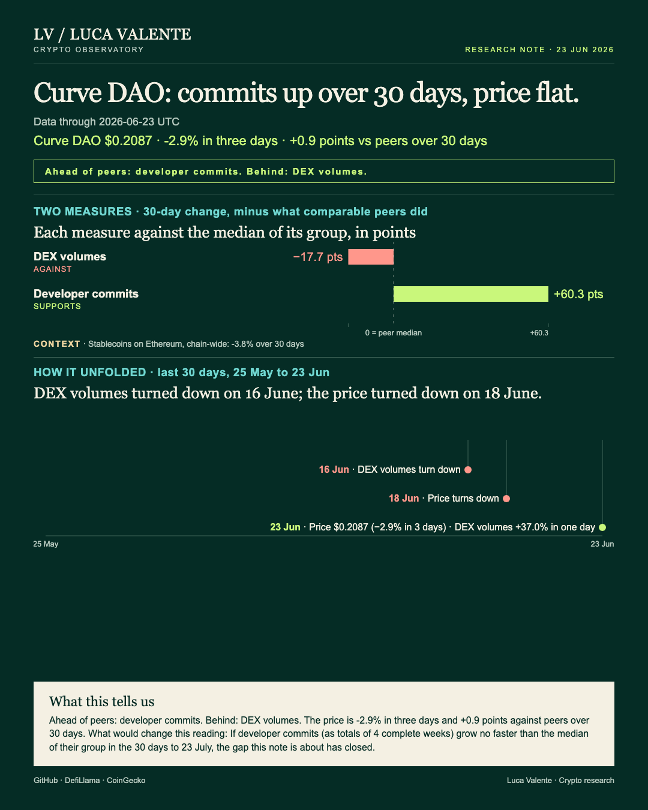
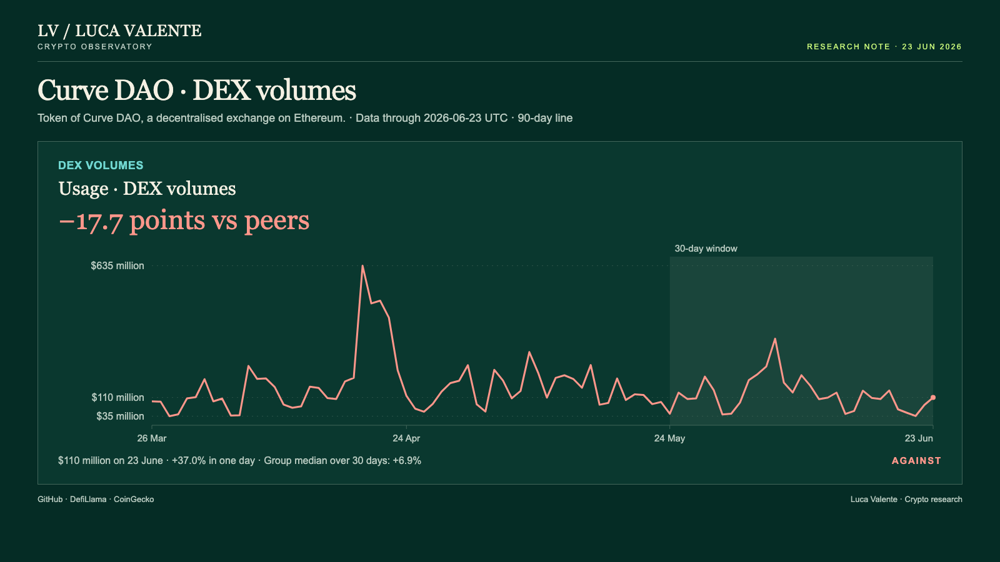
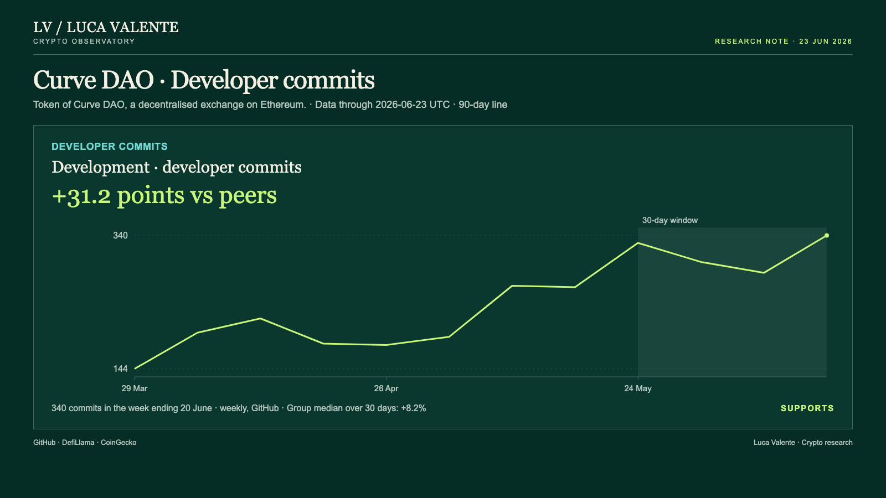

Training note, written on 24 September 2026 from data as of 23 June 2026. Not part of the published series.
One Chart From Curve's Month, And A Price In Step With Peers

Trading on Curve outpaced the median exchange in its group by 124.3 points this past month, while its token moved with the pack.
Anyone holding CRV has a gap to follow: trading and code work grew fast, the token did not. Curve DAO is a decentralised exchange on Ethereum, and CRV is its token.
I read three measures apart: trading volume for usage, stablecoins for capital, commits for development. Each faces the median of those among the 27 exchanges in its group that report it, Curve included.
If I could keep one chart, it would be trading volume, the dollars swapped on Curve each day. It went from $45 million on 24 May to $110 million on 23 June. That is +144.6%, against +20.3% for the median of all 27.

Volumes turned lower on 16 June and fell on 5 of 8 days to 23 June. On 23 June alone they rose 37.0%. That turn makes me less sure.
Commits, the code changes logged weekly in Curve's public repositories, moved first. They turned down in the week starting 17 May and fell in 3 of the next 5. Yet 340 were logged in the week starting 14 June, the most in 12 weeks. Over 30 days they rose 39.4%, against 8.2% for the median of the 11 that report them.

CRV closed 23 June at $0.2087, down 10.9% in 30 days. The median of the 11 listed tokens lost 12.7%: CRV is 1.8 points better, level with its peers. It turned lower on 18 June and fell on 5 of the 6 days from then, 2.9% over the last three. Nothing here links the token to the trading.
These leads come with a test. If most of the three measures are slowing against their peers by 23 July, this reading was wrong. The claim is narrow: trading and code work climbing, the token level with its group. If two of the three lose ground on peers, that lead is gone.
Ethereum's stablecoins go against this note. They measure the chain Curve runs on, not Curve. At $157.90 billion on 23 June, they were down 3.8% in 30 days. The median of the 24 that report them rose 1.5%. They have risen three days running from 21 June, +0.0% on the last. I weigh them below Curve's own two measures.
Left out: value locked, fees, users and wallets. I did not look at them: the data here has none for Curve. Nor does it carry news or reasons. It ends on 23 June 2026.
Back to the one chart: its month is the case, its turn on 16 June the case against.
Sources: DefiLlama (DEX volumes, stablecoins on Ethereum), CoinGecko (CRV price), GitHub (commits).
Peer group: 26 exchanges tracked by DefiLlama (who they are). 'Net of the group' is the 30-day change minus the group's median.
Not financial advice. This is a research note based on public on-chain data.